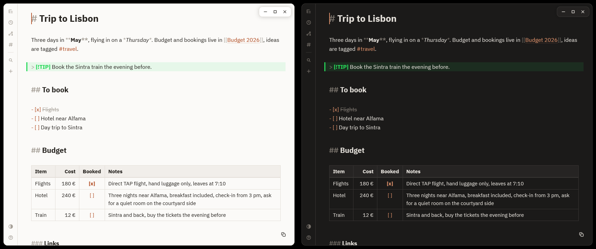

Bref
Notes that open before you blink.
A fast, minimal note-taking app. Notes are plain Markdown files in a folder you choose, styled as you type. Written in Rust with GPUI, the framework behind Zed.
#markdown#rust#linux#macos#windows

Features
- Opens instantly: the window is on screen in about 75 ms.
- Plain files: one
.mdper note, plus your.csvand.tsv. Sync with git or Syncthing; an Obsidian vault works as is, front matter included (its tags and aliases are read). - Styled as you type: headings grow, markers stay visible but dimmed. The file is always plain Markdown.
- Slash commands:
/inserts a heading, list, panel, code block, formula, or a table sized on a grid. - Kanban boards: a note shown as columns of cards you drag around; underneath, still headings and tasks in plain Markdown.
- Several cursors:
Ctrl + Dtakes the next occurrence,Alt + clickadds a cursor; type once, change every place. - A folder or a tag as a table: its notes listed with the keys of their front matter as columns; sort with a click, filter as you type, and rewrite a cell to change that key in the note.
- Replace across the vault: plain text or regular expressions, the count shown before anything is written, and one command to undo it all.
- A calendar of your daily notes: one month beside the note, the days you wrote stand out, a click opens or creates the note of a day.
- Days at your fingertips:
@tomorrow,@mondayor@2026-10-09insert a link to the daily note of that day. - Links and graph:
[[links]],#tags, renames that rewrite your links, backlinks to the open note, and a graph of your notes. - Diagrams: Mermaid, LaTeX, or shapes and arrows drawn on a canvas, saved as SVG in your vault.
- CSV and TSV: opened in a grid, delimiter and encoding detected or chosen, selection by keyboard or mouse, copy, paste and export (TSV, CSV, Markdown, JSON), written straight into the file. A million rows open in a tenth of a second.
- Sync in one action:
Ctrl + Shift + Scommits, receives, merges and sends a vault kept in git, in the background; a real conflict keeps both versions as two notes, never as markers in your text. - Two panes side by side:
Ctrl + \opens a second pane; write a note while reading another, or keep a table next to it. Drag a file from the tree onto the pane where you want it. - Back and forward:
Alt + LeftandAlt + Right, or the side buttons of the mouse, walk through what you opened and land on the same line. - Keyboard first: one palette to find, create and switch. No toolbar, no save button.
- Shortcuts you can change: the help panel searches every shortcut as you type and lets you give any of them other keys; one already in use says by what, and is only taken when you ask. Menus show the shortcut of each action.
- Daily note:
Ctrl+Jopens the note of the day, named after the date, or creates it./datewrites the date. - Word count: words and characters at the bottom of the note, or those of the selection.
- Outline:
Ctrl+Shift+Olists the headings of the note; move through them to preview each section, Enter to go there. - Find and replace:
Ctrl+Fhighlights every match in the note,Ctrl+Hreplaces one or all, with case and whole-word options. - Search inside your notes: the palette finds a note by its name, then by any words in its text, and shows the line that matched.
Ctrl+Shift+Flists every matching line of the vault. - Backup in one command: the palette writes a dated archive of the whole vault where you choose.
- A trash you can undo: nothing is deleted; the palette lists the trash of the vault and puts a note back.
- Icons on notes and folders: forty drawn icons to tell a long tree apart at a glance; they follow renames and travel with the vault.
- Comments in the margin of your text:
Ctrl + Shift + Mannotates a word or a line, kept in the note as CriticMarkup; a panel beside the note lists them, a click goes to one or resolves it. - Links with a readable text:
[text](address), made from a selection withCtrl + Kor by pasting an address over it; a right click in the note opens, copies or edits it. - A terminal one command away: the palette opens the terminal of your system in the folder of the vault.
- Quiet status messages: what just happened, or failed, shows in a corner and leaves after four seconds or on a click.
- Follows your folder: notes added, renamed or changed by another program or a sync tool show up within a fraction of a second.
- Keeps itself current: a banner says when a new version is out. On Windows, macOS and Arch, one click installs it and restarts Bref. It can be turned off.
- Tables like on the web: cells wrap inside their column,
[ ]boxes tick with a click, and a table pasted from a web page, a spreadsheet or Markdown just works. A table of 300,000 rows still opens in about 40 ms. - Yours to dress: a dozen themes, IBM Plex built in so nothing to install (or any font you have), English and French, following your system.
Install
Arch Linux
A prebuilt package ships with every release. No compiler needed.
curl -LO https://github.com/alarboulletmarin/bref/releases/latest/download/bref-x86_64.pkg.tar.zst
sudo pacman -U ./bref-x86_64.pkg.tar.zstmacOS
Apple Silicon and Intel, macOS 11 or later: download bref-macos.dmg, open it and drag Bref to Applications. The app is not notarized, so the first launch needs Open Anyway in System Settings, Privacy & Security.
Windows
Windows 10 or 11, 64-bit: download the installer (no administrator rights needed), or the zip to install nothing. The files are not signed: if SmartScreen warns, click More info, then Run anyway.
Other Linux
Bref is compiled on your machine, with a recent Rust (1.88 or later).
git clone https://github.com/alarboulletmarin/bref.git
cd bref
cargo install --path . --lockedupdates in the palette to check right away, or to stop the daily check.Documentation
On first run Bref asks for a vault, the folder that holds your notes. That is the only setup. The essentials, Cmd instead of Ctrl on macOS:
| Key | Action | | ------------------ | ---------------------------------------------- | | Ctrl + P | find by name or text, create, filter by #tag | | Ctrl + N | new note | | / | insert a heading, list, panel, code or table | | Ctrl + E R G T | tree, recent, graph, tags | | Ctrl + Shift + D | new diagram | | Ctrl + K | link: [text](address) from the selection | | F1 | every shortcut, inside the app; type to search |
The README covers the rest: shortcuts navigation markdown diagrams vault troubleshooting